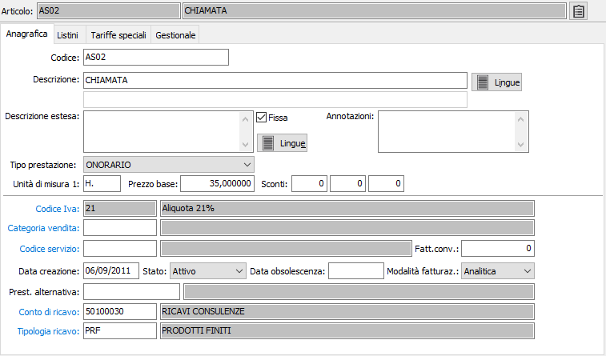

Anagrafica

CODICE: codice alfanumerico di 22 caratteri, a libera scelta dell’utente, che individua la prestazione. Sul campo sono attive le funzioni di ricerca sulla tabella stessa.
DESCRIZIONE 1: campo alfanumerico di 60 caratteri per inserire la prima descrizione della prestazione.
DESCRIZIONE 2: campo alfanumerico di 60 caratteri per inserire la seconda descrizione della prestazione.
DESCRIZIONE ESTESA: campo note per inserire la descrizione completa, ove necessario, della prestazione. Se previsto dalla configurazione, questa descrizione estesa può essere stampata sui documenti in aggiunta alla descrizione della prestazione.
FISSA: definisce se la descrizione estesa è modificabile dai documenti (casella vuota), oppure è fissa (casella con segno di spunta).
ANNOTAZIONI: campo note interne.
TIPO PRESTAZIONE: consente di definire le modalità di trattamento delle prestazioni ed il relativo assoggettamento a ritenute d’acconto e a cassa previdenza, deriva direttamente dalla tabella tipi prestazioni.
UNITÀ MISURA 1: codice alfanumerico, presente in tabella Unità di misura, che definisce l’unità di misura primaria della prestazione con cui vengono gestite le quantità. Sul campo sono attive le funzioni di ricerca e di manutenzione della tabella.
PREZZO BASE: campo numerico per il prezzo di vendita della prestazione, che viene proposto automaticamente in fase di immissione documento quando viene richiamata quella prestazione.
CODICE IVA: codice alfanumerico di 3 caratteri, presente nella tabella Aliquote Iva, che identifica l’aliquota Iva a cui è ordinariamente soggetta la prestazione. Sul campo sono attive le funzioni di ricerca e manutenzione della tabella stessa.
CONTO DI RICAVO: codice alfanumerico di 8 caratteri presente nella tabella sottoconti. È il sottoconto attribuito alla prestazione da utilizzare a livello di contabilizzazione delle parcelle. Sul campo sono attive le funzioni di ricerca e manutenzione della tabella stessa.
CONTO DI COSTO: codice alfanumerico di 8 caratteri presente nella tabella sottoconti. È il sottoconto attribuito alla prestazione da utilizzare a livello di contabilizzazione delle fatture parcelle. Sul campo sono attive le funzioni di ricerca e manutenzione della tabella stessa.
CATEGORIA DI VENDITA: codice alfanumerico di 3 caratteri presente in tabella Categorie di vendita. Individua il codice della categoria attribuita alla prestazione, che viene utilizzato in fase di costruzione della tabella aliquote provvigioni, nella gestione delle tariffe speciali. Sul campo sono attive le funzioni di ricerca e manutenzione della tabella stessa.
MODALITÀ DI FATTURAZIONE: definisce la modalità di raggruppamento in fattura dei movimenti prestazioni, da fatturare, relativi alla prestazione attiva: analitica (non raggruppa), riepilogativa (raggruppa).
DATA CREAZIONE: indica la data in cui la prestazione è stata caricata. Al momento del caricamento di un nuovo record in questo campo viene proposta la data di sistema.
STATO: combo box gestito dall’utente per indicare lo stato della prestazione. Valori ammessi: Attivo; In esaurimento; Obsoleto.
DATA OBSOLESCENZA: indica la data in cui la prestazione è stata dichiarata obsoleta.
PRODOTTO ALTERNATIVO: campo significativo se la prestazione è obsoleta. Può contenere il codice della nuova prestazione che sostituisce la presente.